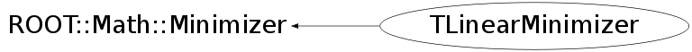

class TLinearMinimizer: public ROOT::Math::Minimizer
TLinearMinimizer, simple class implementing the ROOT::Math::Minimizer interface using TLinearFitter. This class uses TLinearFitter to find directly (by solving a system of linear equations) the minimum of a least-square function which has a linear dependence in the fit parameters. This class is not used directly, but via the ROOT::Fitter class, when calling the LinearFit method. It is instantiates using the plug-in manager (plug-in name is "Linear")
Function Members (Methods)
public:
| TLinearMinimizer(int type = 0) | |
| TLinearMinimizer(const char* type) | |
| virtual | ~TLinearMinimizer() |
| static TClass* | Class() |
| virtual void | ROOT::Math::Minimizer::Clear() |
| virtual bool | ROOT::Math::Minimizer::Contour(unsigned int, unsigned int, unsigned int&, double*, double*) |
| virtual double | ROOT::Math::Minimizer::Correlation(unsigned int i, unsigned int j) const |
| virtual double | CovMatrix(unsigned int i, unsigned int j) const |
| virtual int | CovMatrixStatus() const |
| virtual double | Edm() const |
| double | ROOT::Math::Minimizer::ErrorDef() const |
| virtual const double* | Errors() const |
| virtual bool | ROOT::Math::Minimizer::GetCovMatrix(double*) const |
| virtual bool | ROOT::Math::Minimizer::GetHessianMatrix(double*) const |
| virtual bool | ROOT::Math::Minimizer::GetMinosError(unsigned int, double& errLow, double& errUp, int = 0) |
| virtual double | ROOT::Math::Minimizer::GlobalCC(unsigned int) const |
| virtual bool | ROOT::Math::Minimizer::Hesse() |
| virtual TClass* | IsA() const |
| bool | ROOT::Math::Minimizer::IsValidError() const |
| unsigned int | ROOT::Math::Minimizer::MaxFunctionCalls() const |
| unsigned int | ROOT::Math::Minimizer::MaxIterations() const |
| virtual const double* | MinGradient() const |
| virtual bool | Minimize() |
| virtual double | MinValue() const |
| virtual unsigned int | NCalls() const |
| virtual unsigned int | NDim() const |
| virtual unsigned int | NFree() const |
| virtual ROOT::Math::MinimizerOptions | ROOT::Math::Minimizer::Options() const |
| double | ROOT::Math::Minimizer::Precision() const |
| int | ROOT::Math::Minimizer::PrintLevel() const |
| virtual void | ROOT::Math::Minimizer::PrintResults() |
| virtual bool | ProvidesError() const |
| virtual bool | ROOT::Math::Minimizer::Scan(unsigned int, unsigned int&, double*, double*, double = 0, double = 0) |
| void | ROOT::Math::Minimizer::SetDefaultOptions() |
| void | ROOT::Math::Minimizer::SetErrorDef(double up) |
| virtual bool | SetFixedVariable(unsigned int, const string&, double) |
| virtual void | SetFunction(const ROOT::Math::IMultiGenFunction& func) |
| virtual void | SetFunction(const ROOT::Math::IMultiGradFunction& func) |
| virtual bool | ROOT::Math::Minimizer::SetLimitedVariable(unsigned int, const string&, double, double, double, double) |
| virtual bool | ROOT::Math::Minimizer::SetLowerLimitedVariable(unsigned int ivar, const string& name, double val, double step, double lower) |
| void | ROOT::Math::Minimizer::SetMaxFunctionCalls(unsigned int maxfcn) |
| void | ROOT::Math::Minimizer::SetMaxIterations(unsigned int maxiter) |
| void | ROOT::Math::Minimizer::SetOptions(const ROOT::Math::MinimizerOptions& opt) |
| void | ROOT::Math::Minimizer::SetPrecision(double prec) |
| void | ROOT::Math::Minimizer::SetPrintLevel(int level) |
| void | ROOT::Math::Minimizer::SetStrategy(int strategyLevel) |
| void | ROOT::Math::Minimizer::SetTolerance(double tol) |
| virtual bool | ROOT::Math::Minimizer::SetUpperLimitedVariable(unsigned int ivar, const string& name, double val, double step, double upper) |
| void | ROOT::Math::Minimizer::SetValidError(bool on) |
| virtual bool | SetVariable(unsigned int, const string&, double, double) |
| virtual bool | ROOT::Math::Minimizer::SetVariableValue(unsigned int, double) |
| virtual bool | ROOT::Math::Minimizer::SetVariableValues(const double* x) |
| virtual void | ShowMembers(TMemberInspector& insp) |
| int | ROOT::Math::Minimizer::Status() const |
| int | ROOT::Math::Minimizer::Strategy() const |
| virtual void | Streamer(TBuffer& b) |
| void | StreamerNVirtual(TBuffer& b) |
| double | ROOT::Math::Minimizer::Tolerance() const |
| virtual int | ROOT::Math::Minimizer::VariableIndex(const string&) const |
| virtual string | ROOT::Math::Minimizer::VariableName(unsigned int) const |
| virtual const double* | X() const |
private:
| TLinearMinimizer(const TLinearMinimizer&) | |
| TLinearMinimizer& | operator=(const TLinearMinimizer& rhs) |
Data Members
protected:
| int | ROOT::Math::Minimizer::fDebug | print level |
| unsigned int | ROOT::Math::Minimizer::fMaxCalls | max number of function calls |
| unsigned int | ROOT::Math::Minimizer::fMaxIter | max number or iterations used to find the minimum |
| double | ROOT::Math::Minimizer::fPrec | precision |
| int | ROOT::Math::Minimizer::fStatus | status of minimizer |
| int | ROOT::Math::Minimizer::fStrategy | minimizer strategy |
| double | ROOT::Math::Minimizer::fTol | tolerance (absolute) |
| double | ROOT::Math::Minimizer::fUp | error scale |
| bool | ROOT::Math::Minimizer::fValidError | flag to control if errors have been validated (Hesse has been run in case of Minuit) |
private:
| vector<double> | fCovar | |
| unsigned int | fDim | |
| vector<double> | fErrors | |
| TLinearFitter* | fFitter | |
| double | fMinVal | |
| unsigned int | fNFree | |
| const ROOT::Math::IGradientFunctionMultiDim* | fObjFunc | |
| vector<double> | fParams | |
| bool | fRobust |
Class Charts
{kind=link}
{kind=link}
{kind=link}
{kind=link}

Function documentation
TLinearMinimizer(int type = 0)
Default constructor implementation. type is not used - needed for consistency with other minimizer plug-ins
TLinearMinimizer(const char* type)
constructor passing a type of algorithm, (supported now robust via LTS regression)
void SetFunction(const ROOT::Math::IMultiGenFunction & )
Set function to be minimized. Flag an error since only support Gradient objective functions
void SetFunction(const ROOT::Math::IMultiGradFunction & objfunc)
Set the function to be minimized. The function must be a Chi2 gradient function When performing a linear fit we need the basis functions, which are the partial derivatives with respect to the parameters of the model function.
bool Minimize()
find directly the minimum of the chi2 function solving the linear equation. Use TVirtualFitter::Eval.
bool SetVariable(unsigned int , const string& , double , double )
set free variable (dummy impl. )
{ return false; }unsigned int NDim() const
this is <= Function().NDim() which is the total number of variables (free+ constrained ones)
{ return fDim; }unsigned int NFree() const
number of free variables (real dimension of the problem) this is <= Function().NDim() which is the total
{ return fNFree; }double CovMatrix(unsigned int i, unsigned int j) const
return covariance matrices elements
if the variable is fixed the matrix is zero
The ordering of the variables is the same as in errors